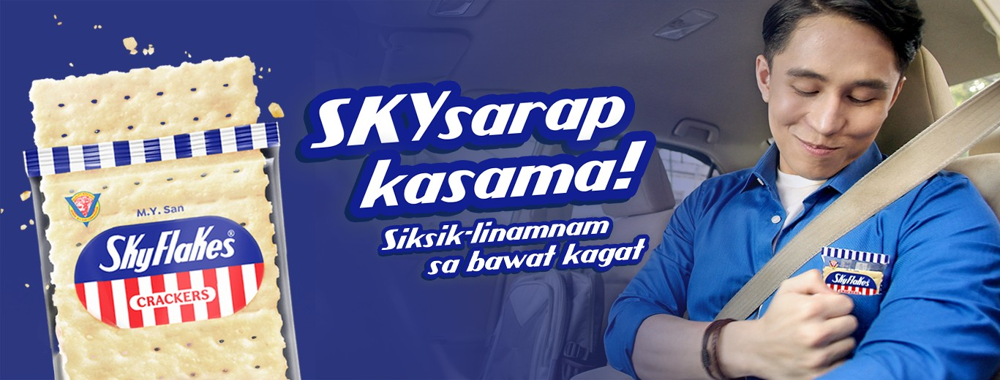

.png)
S K Y F L A K E S

Skyflakes, a popular brand of crackers, has been a staple in households worldwide for decades. These light and crispy crackers are renowned for their simple yet satisfying taste and versatility. Manufactured by Monde Nissin, Skyflakes has become synonymous with quality and reliability in the snack industry.
What sets Skyflakes apart is its wholesome ingredients, often comprising flour, vegetable shortening, and baking soda. The meticulous baking process results in a delightful texture, making them perfect for various occasions. Whether enjoyed on their own or paired with cheese, spreads, or dips, Skyflakes offers a satisfying crunch that caters to diverse palates.
Beyond their delicious taste, Skyflakes crackers are often celebrated for their health-conscious approach, with some variations featuring whole wheat or multigrain options. Their convenient packaging makes them an ideal on-the-go snack, appreciated by those with active lifestyles.
As Skyflakes celebrates your first year, it's a reminder of the enduring appeal of this timeless snack. From family gatherings to solo snacking moments, Skyflakes has carved its place as a beloved companion in the world of crackers. Cheers to a year filled with crispy goodness!